Dashboards & alerting¶
The warehouse holds the data and the pipeline keeps it fresh. The application platform is where decision-makers actually read it: a Next.js single-page application over a role-aware Django REST API, which never touches a database directly.
Synthetic data
All screenshots on this page show the platform populated with the synthetic test dataset.
Navigation¶
The interface follows the way the business reasons: two axes, each read through three views, plus a consolidated overview and supporting areas. Navigation is filtered by role, so the menu itself reflects each user's permissions.
| Area | What it presents |
|---|---|
| Overview | The headline indicators of both axes side by side |
| Parcel Delivery | Operations · Cost & Profitability · Performance |
| On-Demand Dedicated Transport | The same three views, on a strictly separate financial perimeter |
| Alerts | Alerts raised or subscribed to, with status and history |
| Preferences | Saved filters, notification channels, theme and language |
| Administration | User activation, role assignment, pipeline supervision (administrators only) |
Users sign in with the credentials of the company HR system. There are no separate LOGIQ passwords to manage.
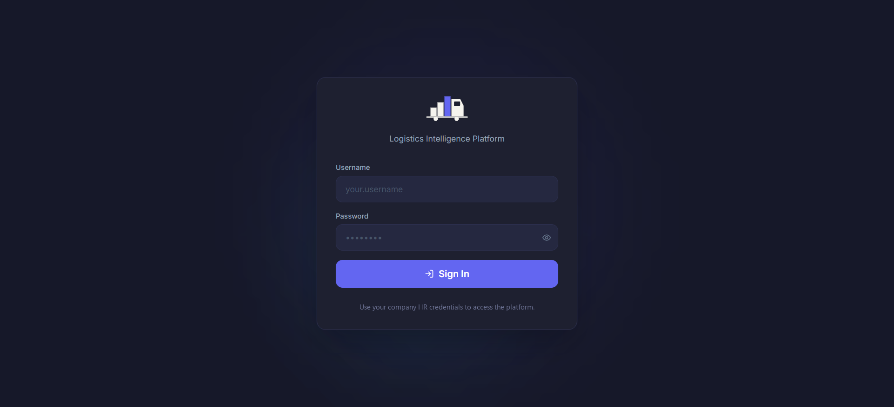
The two axes, three views¶
Every page shows five KPI cards above two rows of two charts. A global filter bar is shared across the page, so changing it re-synchronises every visualisation. A filter set can be saved as a named bookmark for one-click return.
| Filter | Control | Values |
|---|---|---|
| Quick range | Pills | 7 d / 30 d / 90 d / year-to-date |
| Custom range | Date pickers | Any window within the available history |
| Type (parcel axis) | Dropdown | All / home delivery / stop-desk |
| Type (transport axis) | Dropdown | All / dedicated trip / courier / handling |
All monetary values are in DZD. Thresholds mentioned below are configurable user defaults, not fixed limits.
| KPI | Formula (pseudo) | Business value |
|---|---|---|
| Total requests | COUNT(*) over created date | Demand volume |
| Completion rate % | completed / total × 100 | Fulfilment level |
| Cancellation rate % | cancelled / total × 100 | Lost demand (watch above 10 %) |
| Avg distance (km) | AVG(measured real distance) | Trip length / routing |
| Avg stops / request | AVG(stops) | Logistical complexity |
Charts: monthly volume (stacked bar) · service breakdown (donut) · origin–destination (heatmap) · distance category (bar).
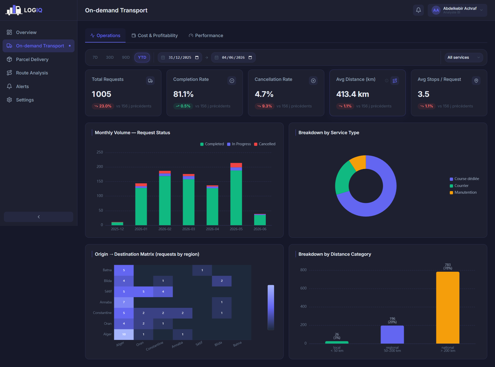
| KPI | Formula (pseudo) | Business value |
|---|---|---|
| Total revenue | SUM(amount invoiced) | Billed revenue |
| Total cost | SUM(8 cost components) | Cost build-up per trip |
| Gross margin | revenue − cost | Absolute profit |
| Margin % | margin / revenue × 100 | Profitability (target above 20 %) |
| Cost / km | cost / distance | Unit economics |
Charts: revenue vs cost (combo) · cost categories (ranked bar) · cost per km by vehicle (bar) · top corridors by margin (ranked bar).
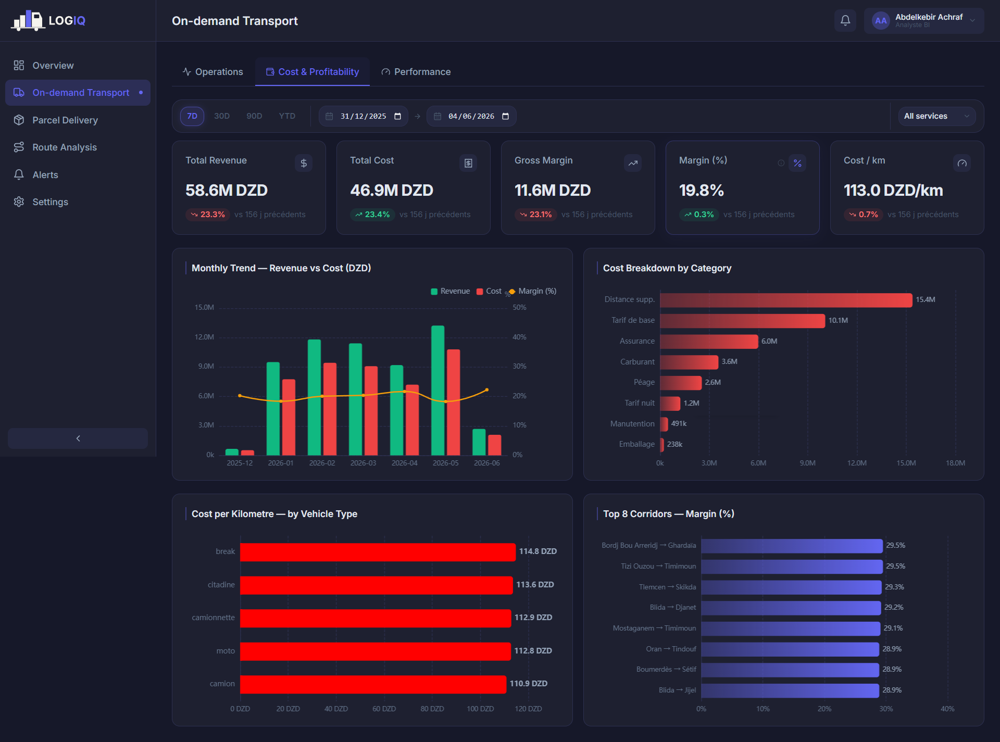
| KPI | Formula (pseudo) | Business value |
|---|---|---|
| On-time rate % | on-time / rated × 100 | Punctuality (alert below 80 %) |
| Avg duration (h) | AVG(duration) / 60 | Trip duration |
| Avg client rating | AVG(rating), out of 5 | Experience (below 3.5 = degraded) |
| Avg arrival delay (min) | AVG(actual − planned arrival) | Schedule adherence |
| Night-shift rate % | night / total × 100 | Night-surcharge exposure |
Charts: on-time trend (dual-axis lines) · delay distribution (bar) · rating distribution (bar) · on-time by vehicle (bar).
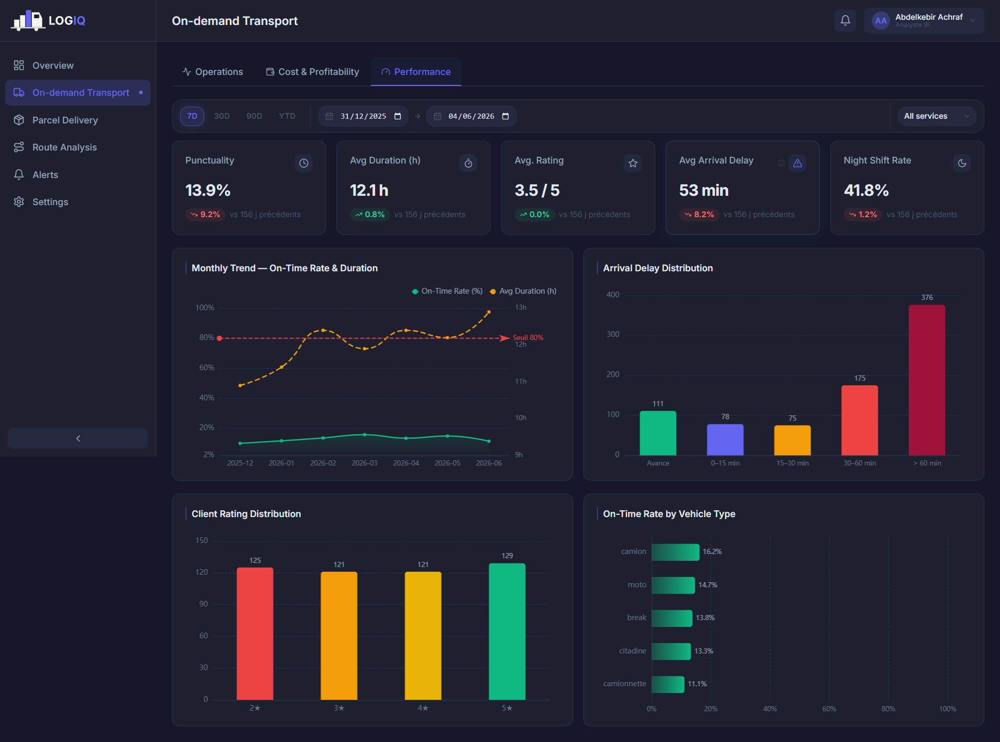
| KPI | Formula (pseudo) | Business value |
|---|---|---|
| Parcels handled | COUNT(*) over creation date | Raw activity volume |
| Delivered | COUNT FILTER status = Delivered | Successful deliveries |
| Returns | COUNT FILTER status = Returned | Cost incurred without delivery revenue |
| In transit | COUNT FILTER not terminal | Live backlog still moving |
| Avg delivery duration | AVG(duration) / 60 FILTER Delivered | Speed of service (hours) |
Charts: volume trend (stacked bar) · status breakdown (donut) · region flow (heatmap) · zone distribution (bar).
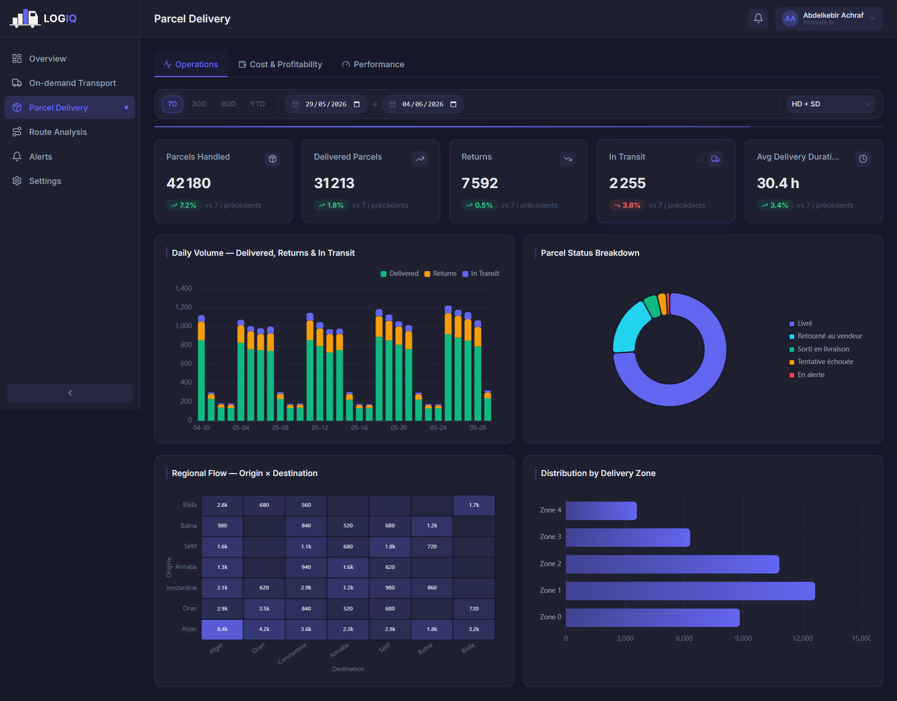
| KPI | Formula (pseudo) | Business value |
|---|---|---|
| Fees collected | SUM(delivery fee) | Revenue of the parcel segment |
| Operational cost | SUM(validated charges) + SUM(salaries) | Total cost to serve |
| Gross margin % | (fees − cost) / fees × 100 | Profitability of the axis |
| Avg fee / parcel | fees / delivered | Average unit revenue |
| Cost / delivered parcel | cost / delivered | Unit cost; loss-making above the fee |
Charts: revenue vs cost (combo) · expenses by category (bar) · regional margin (heatmap) · zone profitability (dual-axis).
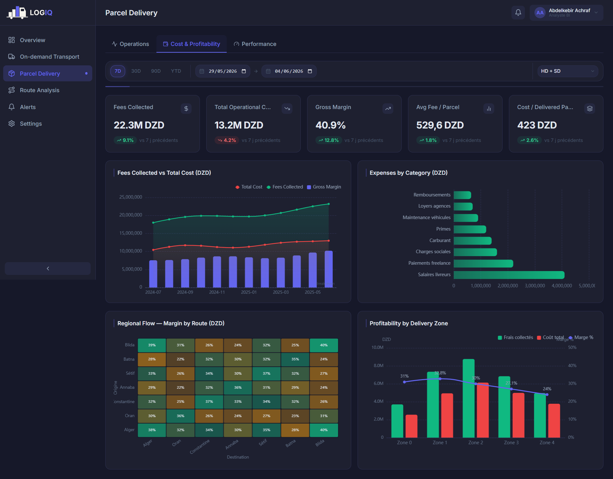
| KPI | Formula (pseudo) | Business value |
|---|---|---|
| Delivery rate % | delivered / created × 100 | Service level (alert below 73 %) |
| Avg attempts | AVG(attempts + 1) FILTER Delivered | Field efficiency |
| 1st-attempt success % | first-try delivered / delivered × 100 | Right-first-time quality |
| Avg delivery duration | AVG(duration) / 60 FILTER Delivered | Speed of service (hours) |
| Claims declared | COUNT(reimbursements) | Packaging / handling quality signal |
Charts: monthly performance (dual-axis lines) · duration distribution (histogram) · top expedition centres (ranked bar) · claims by type (donut).
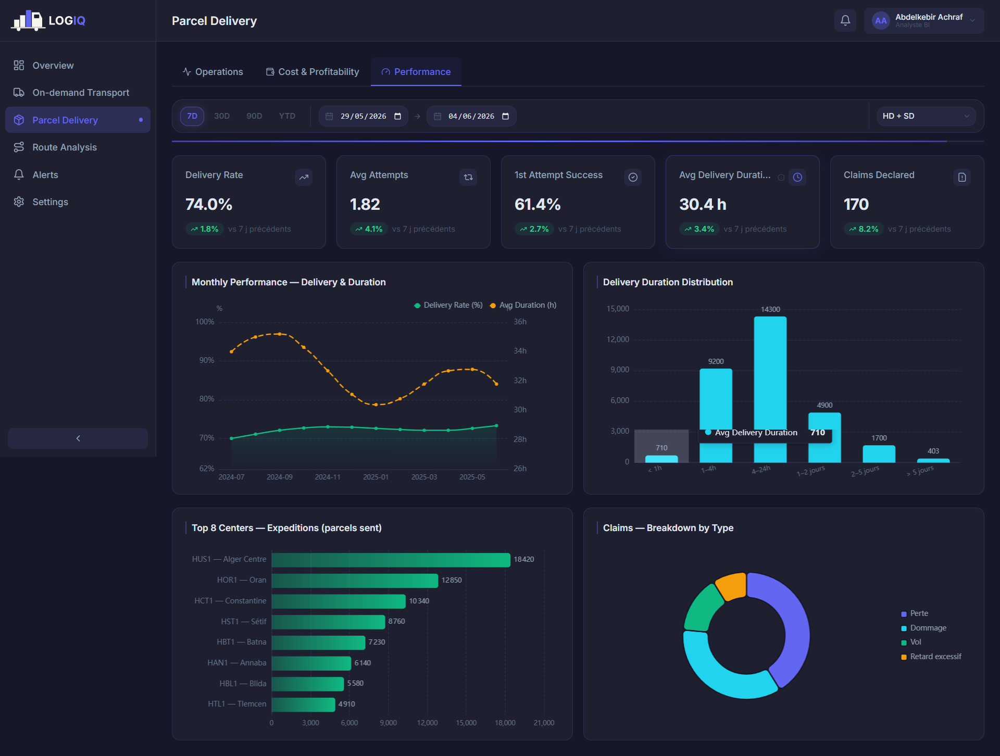
Visualisation toolkit¶
The dashboards are visual-first. Each KPI is a chart or graphic, with the exact figures one click away.
| Visualisation | Library | Used for |
|---|---|---|
| KPI cards | Tremor | Headline figure, period-over-period delta, severity colour |
| Statistical charts | ECharts | Trends, comparisons, composition, scatter, heatmap, gauge, radar, Sankey |
| Custom diagrams | D3.js | Bespoke cost-flow and network visualisations |
| Interactive maps | Leaflet | Geographic distribution of flows across the wilayas |
Verifiable KPIs¶
Every KPI card opens a data-table view that lists the individual records behind the headline figure. Opening Total Requests, for example, shows each request with its identifier, date, service, status, origin, destination, distance and stop count. Every KPI thus becomes an auditable number rather than an opaque one.
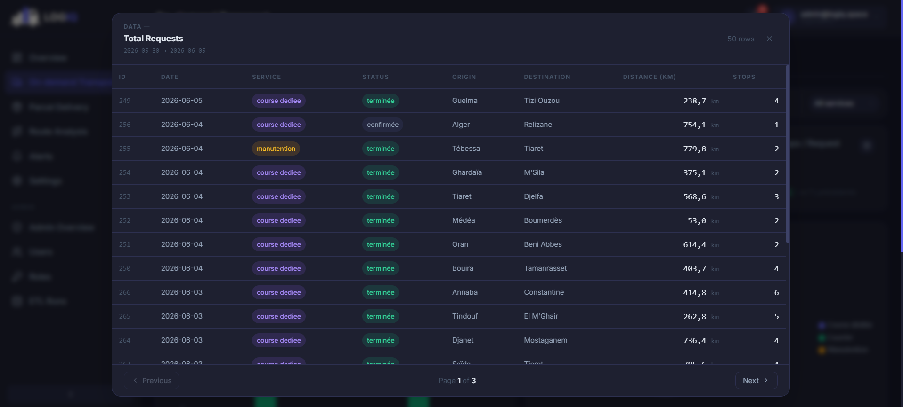
Proactive alerting¶
Presentation answers questions when they are asked. Alerting answers them before they are asked. A user defines a rule on a sensitive indicator: metric · operator · threshold · severity · cooldown.
flowchart TB
R["Define rule<br/>metric · operator · threshold<br/>severity · cooldown"] --> E["Scheduled evaluation<br/>(Celery worker)"]
E --> C{"Threshold crossed<br/>and cooldown elapsed?"}
C -- "no" --> E
C -- "yes" --> A["Raise alert"]
P["ETL run events"] --> A
A --> I["In-app<br/>(real time)"]
A --> M["E-mail"]- A periodic Celery task reads each active rule's value from the aggregate layer. The cooldown stops a still-breached metric from alerting on every cycle.
- Alerts carry a severity: info, warning or critical.
- Delivery depends on subscriptions (a user only receives alerts for rules they subscribe to) and on each user's channel preference (in-app, e-mail, or both).
- In-app notifications are pushed in real time. E-mail covers ETL-run reports, and alerts are grouped into a weekly digest sent every Sunday at 07:00.
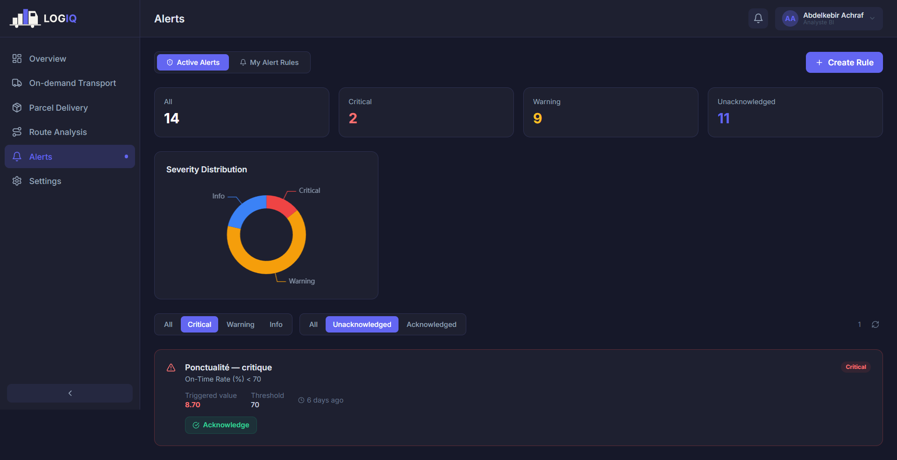
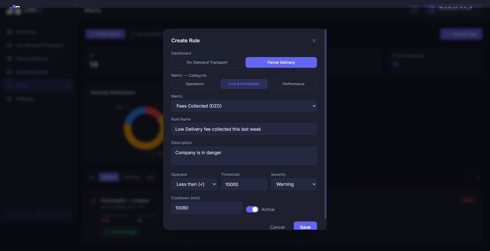
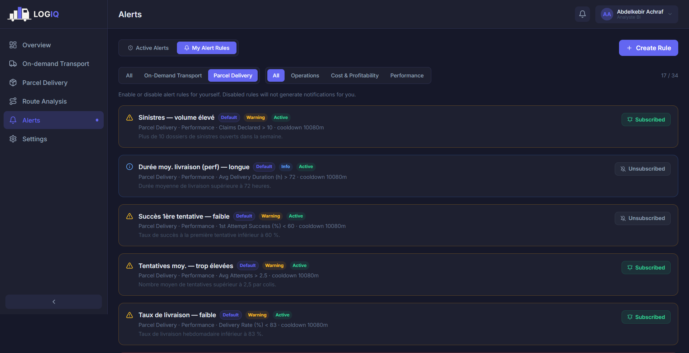
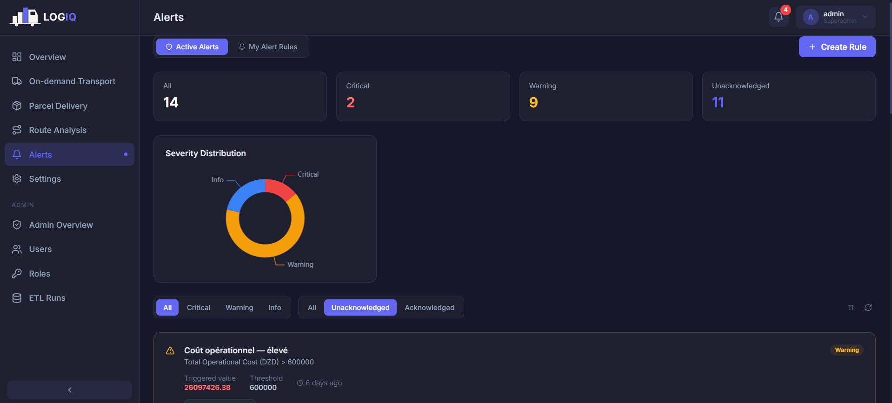
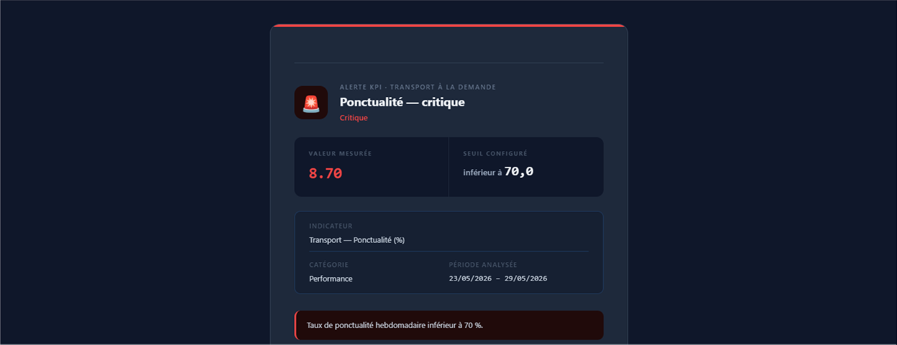
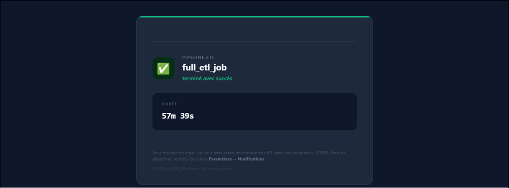
Preferences and multilingual support¶
Each user picks a theme (light or dark), their notification channels and the interface language. LOGIQ ships in Arabic, French and English, with a complete right-to-left layout for Arabic. Preferences are stored on the operational database and re-applied at every session.
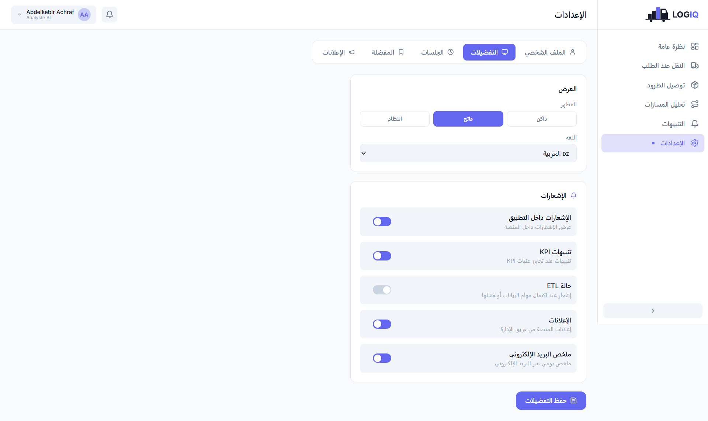
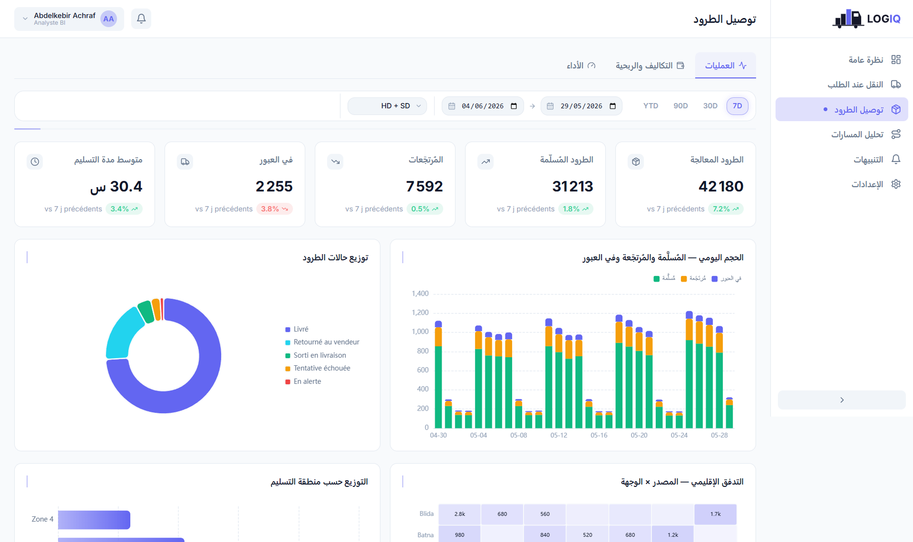
Administration¶
Administrators keep full access to every business page. They also have an Administration area: a platform overview, the Users page (activate HR-imported accounts and assign roles), the Roles page (define what each role may reach), and the ETL Runs history.
The backend also exposes a webhook receiver for the HR system. When an employee is hired, leaves or has their details changed, the matching account is provisioned, revoked or updated automatically.
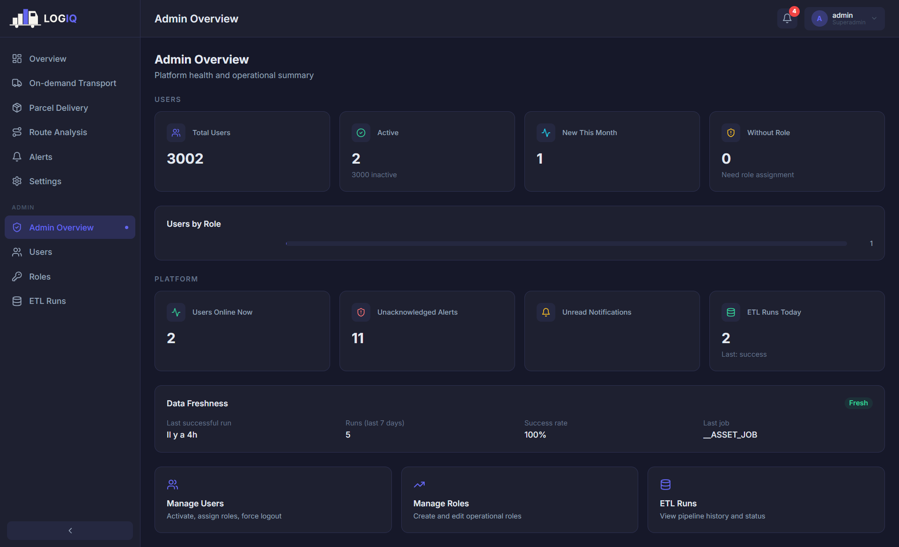
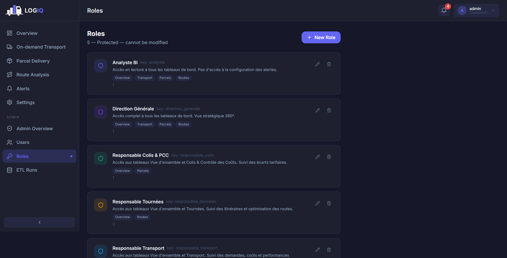
Graceful degradation¶
The analytical and operational planes are separate, so a brief outage of the warehouse does not break the experience. The analytics endpoints fail safe: they return representative figures instead of an error, and the interface stays usable for real work and for demonstrations alike.